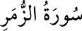

<a name=7533></a><br/>
<b>39- ZÜMER SÛRESİ</b><br/>
<i><b>Mekke’de nâzil olmuştur. </b></i><br/>
<i><b>75 âyettir. Yalnız 53-55. âyetler Medine’de inmiştir. </b></i><br/>
<i><b>Adını, 71 ve 73. âyetlerde geçen </b></i><br/>
<i><b>mümin ve kâfirlerin oluşturduğu topluluklar anlamına gelen </b></i><br/>
<i><b>«zümer» kelimesinden almıştır.</b></i><br/>
